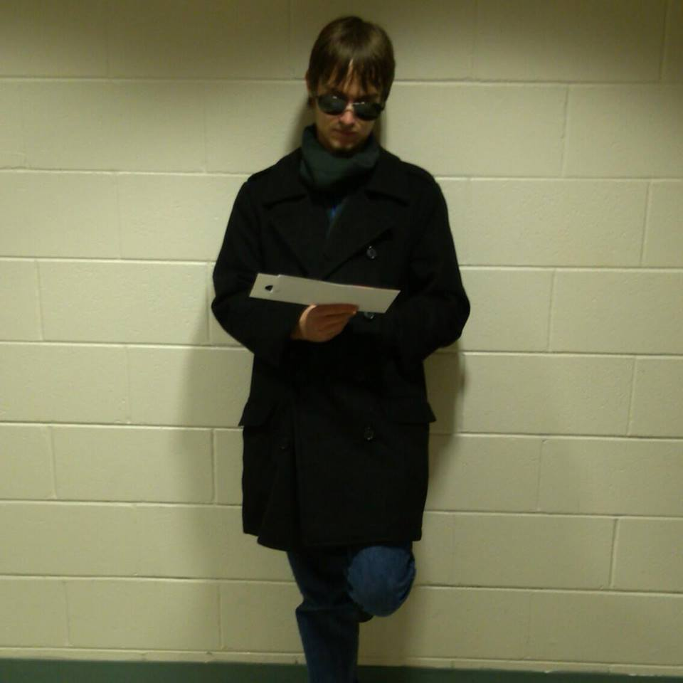
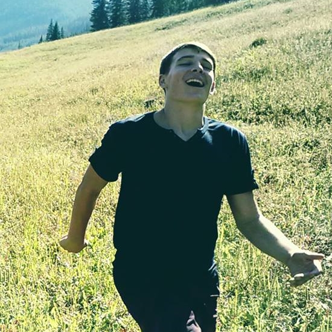

Andrew Eagle
I am currently studying Game Design as well as Computer Security in the University of Colorado at Colorado Springs' Bachelor of Innovation program. My goal with Square Infinity is to
not only produce quality software for utility, but also to design and produce games that tell interesting, meaningful stories in new ways. I hope that I can change the way people think
about games for the better and help to hasten their acceptance into a wider range of arts. I met the rest of the team while attending Billings West High School and although we are now
spread across a country, we are more than capable of high quality work.

Ivan Mattie
Hello, I am a Computer Science major at the University of Colorado, at Colorado Springs. My major passions are telling stories and writing code, so naturally Square
Infinity is an extension of of these passions. My goal is to design cool, interesting new software and applications, as well as design interesting games. I have a lot of ideas I would love
to share with the world, and with the team I'm with, I'm sure anything is possible. I hope to further games as a new, powerful medium for art and complex narrative. I also love the outdoors,
reading, writing, and generally being with cool people doing interesting things.

Garret Meier
Hi, I'm currently a freshman studying Software Engineering and Philosophy at Iowa State University. If you want to learn more about me personally have a look at
my website. I can't wait to see what the team can do with Square Infinity. Right now, helping other
companies express themselves through technology really makes me excited to get to work on every unique project. I am currently working mostly on web design and Android
projects for Square Infinity. My passion for the future comes from the amazing ability to utilize games as an art form to influence players through our story. Other than programming, I
really enjoy spending my time enjoying great clouds, blogging, and reading.
David Lindenbaum
I like to be completely amazing at everything